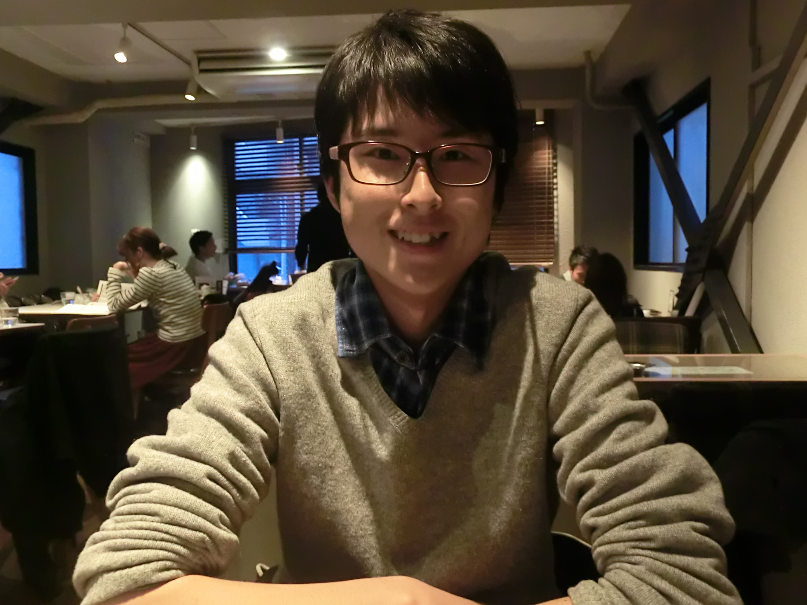
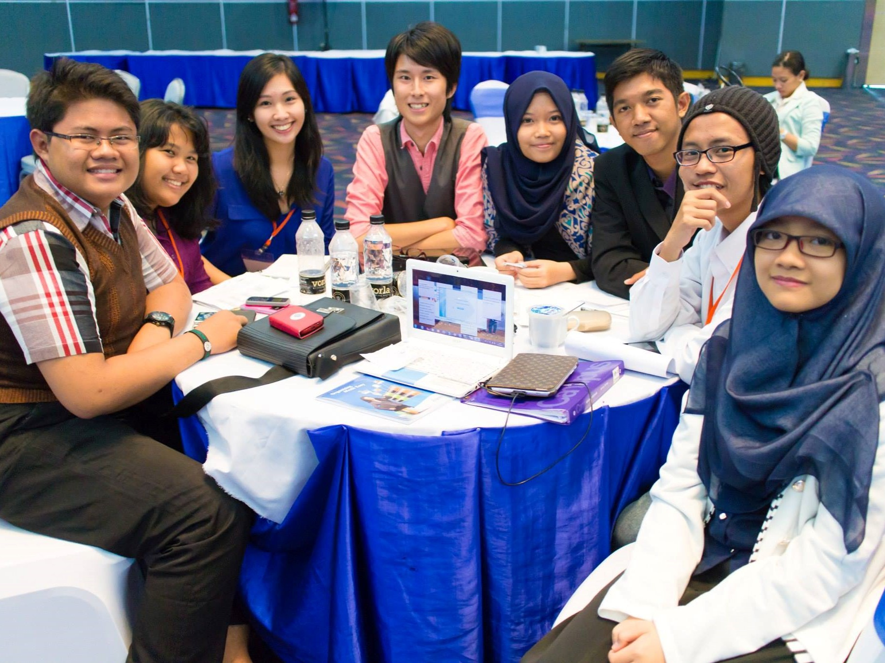
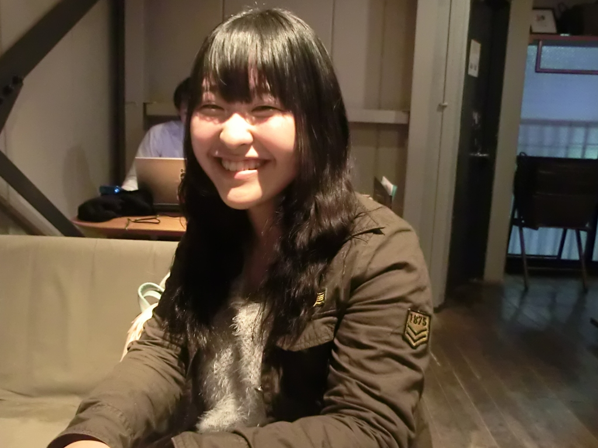
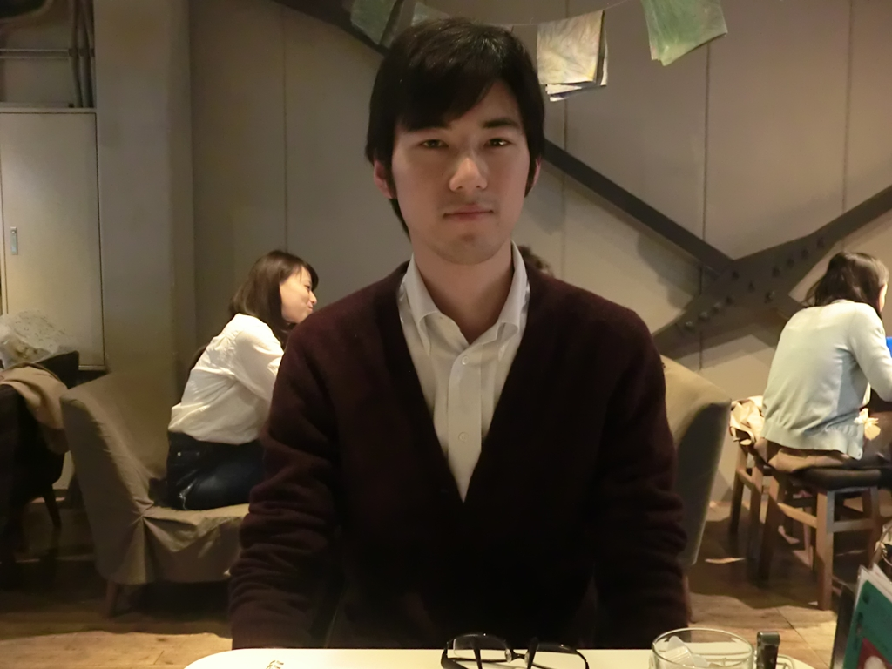
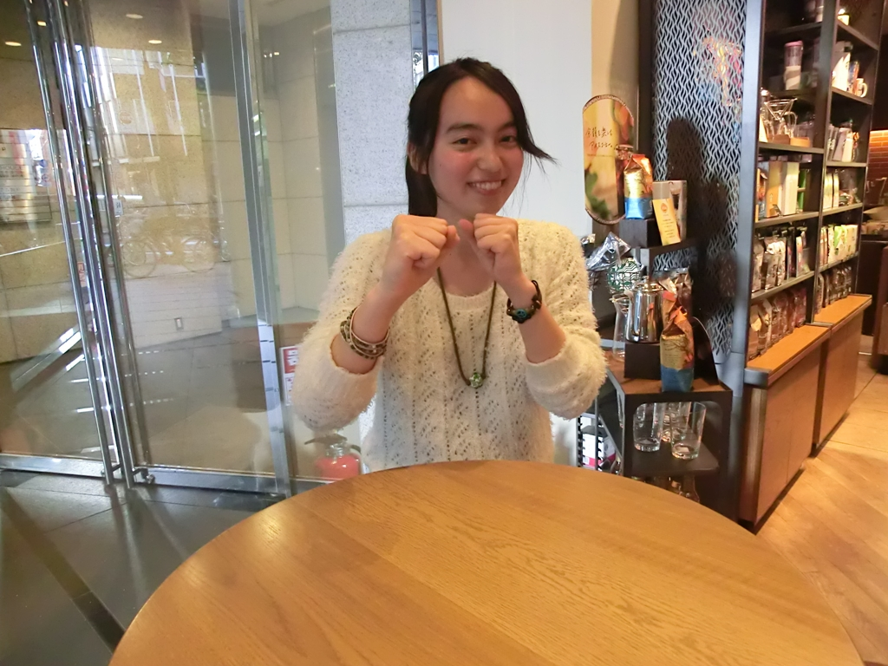

2015.03.24
 解なき規範を考える
政治経済学を勉強しています。その中でもゲーム理論や社会的選択理論と呼ばれる分野を専攻しています。これは集団の意思決定の方法について数理的に分析する分野で、具体的にはサークルの幹事長を決める方法から民主主義における選挙制度まで、個人の意見を集めて集団の意思決定を行うあらゆる場面について適用できる理論を勉強しています。
―――例えばどんな理論がありますか？
例えば、A,B,Cの3人からなるグループにおいて、旅行先を決める場面を想像してみましょう。アメリカ、イギリス、フランスという候補があった際に、3人の行きたい旅行先が下記のように分かれていたとします。
| A | B | C | |
|---|---|---|---|
| 1位 | アメリカ | イギリス | フランス |
| 2位 | イギリス | フランス | アメリカ |
| 3位 | フランス | アメリカ | イギリス |
そこで、次のような投票を実施してみることにしました。まず「アメリカとイギリスの二択で言うとどちらに行きたいか」と聞きます。するとAとCがアメリカを選び、Bはイギリスを選びます。この場合、2対1でアメリカが選択されます。同様にして「イギリスとフランス」で投票すると，AとBがイギリスを、Cがフランスを選び、行先はイギリスに決まります。最後に「アメリカとフランス」で投票すると、Aがアメリカ、BとCがフランスを選び、行先はフランスに決まります。
―――はい。
さて、ここで今の投票結果を見比べてみましょう。この3人にとって、イギリスよりはアメリカが良いはずです。同様にアメリカよりはフランスが良いはずです。従ってイギリスよりフランスが良いはずですが、最後の投票ではフランスよりもイギリスが良いという結果が出ています。このように、我々が日常的に行っている意思決定の方法には矛盾を含んでいる可能性があるのです。
―――なるほど。
これはあくまで単純な例ですが、例えば似たような問題が選挙制度などにあるとしたら、民主主義にとって大きな問題になります。このように、意思決定の方法に関わる矛盾や正統性について数学的に考える分野が社会的選択理論です。
―――面白いですね！
はい、8月から半年間インドネシア大学に留学していました。そこでは主に開発経済学を勉強していましたが、英語やインドネシア語の勉強になったという側面が大きかったように感じます。英語とは別の「第二外国語」でコミュニケーションを取る経験が想像以上にエキサイティングでした。と言うのも、「英語で話す」ことは、今まで学校で習った文法や語彙などを使って「正しく話す」ことを意識しがちでしたが、インドネシア語は現地で慣れながら場当たり的に学んでいった部分があるので、新しい言語を学ぶことのダイナミックな感覚を得られました。また別の言語を新しく学ぶことになったとしても、抵抗なく前向きに学んでいけるようになったと思います。
―――留学に行きたい新入生は多いと思いますが、実際に留学に行く人はあまり多くありません。本当に留学に行くには何かハードルがあるのでしょうか。
1つに、大学・学部の制度が挙げられると思います。留学に行くと4年で大学を卒業できなくなる可能性があったり、周囲の人より授業を多く履修しなければならなくなることがあります。そのようなハードルを下げてくれる制度を大学側が用意してくれているかどうかは1つの要因だと思います。ただ、大学を5年かけて卒業する人なども高校時代に想像していたよりは遥かに多く周囲にいるので、そこは躊躇しなくても大丈夫なのではないかと私は思います。ちなみに私は応募締め切りの2日前に留学のプログラムを知って考え始め、ノリと勢いで応募してしまったタイプですが、結果的に行って良かったと思っています。
 Asia Pacific Student Forumに参加
第1回の「大学って何のためにあるの？」です。実はこの時、私は高校3年生でした。大学に入学する前に「そもそも大学で勉強するということは何なのか」について話したのですが、高校生だった自分にとって、実際に大学の先輩たちと話し合うことができたのは貴重な経験で、自分が興味のある分野をなぜ学ぶのかについて再確認することができました。また年齢や専攻に拘わらず様々な人とフラットに議論できるという形式も、他に無かったので印象的だったのだと思います。
まずは久米郁夫『原因を推論する』と高根正昭『創造の方法学』です。
この2冊は「科学的に物事を考えるとはどういうことか」について解説しているので、どんな専攻の人でも大学で勉強する上で欠かせない分野の知識だと思います。一度この内容を理解しておくと、今までどのように考えればよいか分からなかった問題について、自分で整理して考えることができるようになります。私も大学1年生の時に読んでおけば良かったと思っています（笑）。
―――ありがとうございました！
≫002
2015.03.25
 後悔しないために、行動し続ける。
日本語教育専攻を志望しています。外国人に対して日本語を教えることの理論について勉強する分野です。例えば、外国人に日本語を教えるためのシラバスを作ったり、実際に留学生に教えたりします。
―――なぜそれに興味を？
2年生の時に受けた社会言語学の授業が面白かったからです。日常のシチュエーションごとに言語コミュニケーションをパターン化していく授業で、例えば謝罪表現のシチュエーションで「先に謝る」「言い訳する」「理由を説明する」等のパターンで分けて、それぞれどんな結果になるかを考えました。そのパターンごとの差異を学習する中で、「人の考え方や行動パターンは一人一人違うんだ」ということを強く実感して、異なる言語間でその違いを伝え合う日本語教育という分野に興味を持ちました。
子ども国会という団体で中高生と社会問題などについて議論するイベントを開催しています。例えば「結婚」というテーマで、自分たちや参加者が持つ結婚観について意見を出し合ったり、自分が思う幸せとは何かについて議論しました。
―――なぜそれを始めたのですか？
1年生の時に所属していた部活を辞めて時間ができたためです。部活は月に1回の大会と週に4回以上の練習が忙しすぎて、自分のイメージしていた大学生活と乖離してきたことを感じたため辞めました。部活一筋の大学生活ではなく、ちゃんと勉強も両立したかったため、それに近い活動ができる子ども国会の活動に参加しました。
―――なるほど、確かに大学2年生くらいになって自分のイメージしていた大学生活と違う、と部活やサークルを辞めて新しく学外の団体を探す人は多いですよね。Cloud.Aにもそうやって参加してきた方が沢山います。
そうですね、後は他にも、とにかく大学生活を後悔しないように、色んなイベント等に顔を出しています。例えば3rdクラスというイベントで元NHKアナウンサーから「魅力溢れる女子」になるための呼吸法や発声練習を教わったり、起業家志望の学生が集まるイベントで講演を聞いたりもしました。それから、スペインのトマト祭りに行ってみたり、友達と3人で海老名パーキングから徳島までヒッチハイクしたりもしましたね。
―――積極的に様々なイベントに参加しているんですね！
スペインでコスプレ日本人に会った
第24回の「日本は美しい国か」です。ここで私は発表する側だったのですが、言いたいことをまとめるのが難しかったです。言いたいことを順序立てて組み立てることや、プレゼンテーションの資料をうまく作ることが難しかったです。運営メンバーからプレゼン作成の際に多くのアドバイスをいただいたので、なんとか形にすることができました。
では、私からは授業で読んだ小説をご紹介します。
1冊目は夏目漱石の『三四郎』です。登場人物に美禰子という人物がいます。このキャラクターが自分と似ていたので好きです。彼女は自由奔放ですが、最終的には自分の好きな人ではなく、家の人が決めた相手と結婚します。普段は周囲を振り回すものの、最後には伝統やしきたりに従うんです。その間に彼女の迷いや葛藤が感じられて、感情移入してしまいました。
―――なるほど。
2冊目は中勘助『銀の匙』です。前編と後編に分かれていて、作者の文体が変わっているところに惹かれました。内容は単に病気がちな少年の日常を淡々と書いているに過ぎないのですが、音読すると情景描写がリアルに頭に浮かんできて、1つ1つの言葉が大切にされているように感じます。この2冊が特にオススメです！
―――ありがとうございました！
≫001
≫003
2015.03.29
 酒、タバコ、学問！
経済学を勉強していて、特に国際金融論という分野を専攻しています。例えば為替レートについてや、利子率の変動や輸出の増減による経済への影響について、一国のみでなく国際的な視野から検討するような分野です。
―――なるほど、その中でも特にどんな勉強をしているんですか？
はい。前年度の前半はゼミでマクロ経済学の基礎を中心に勉強していました。ゼミとは講義と違って、より主体的な勉強をするための少人数制クラスで、私のゼミでは1班4人程度の班で発表や議論を行いました。例えば1990年代のバブル崩壊以降の不況の原因と、それに対する政府の対策について議論した回が盛り上がりました。具体的には、銀行がお金を貸さない「貸し渋り」は、銀行が貸し倒れリスクを嫌って貸さなかったのか、借りる側が返済できないリスクを嫌って借りなかったのか、について白熱したことを覚えています。
―――面白そうですね。
そうです、経済学の面白いところは、高校までの政治経済の教科書で「不況の時は道路を造れば良い」といった「正解」が用意されていますが、実際に経済史を紐解いてみると、必ずしもその対策が功を奏しているわけではないことに気付きます。なぜなら、教科書にある「正解」は、その問題設定の前提を極力シンプルにしてある一方で、現実社会はそこまで想定通りにいかないためです。そのため議論では、そういった教科書的な前提と現実の複雑な状況との差異について語ることも多いです。
―――なるほど。
また、教科書の「正解」が作られた時代と現代では、時代が異なるが故に教科書通りにいかない事例もあります。例えば昔は日本の産業における建設業の割合が高かったため、政府が公共事業に金を使えば日本全体に金が回るという循環が機能したけれども、現在の建設業の割合は低下し、サービス業の割合が高まっている。この時、建設業に政府支出を回すことがどれだけ日本全体に金を回すことになるかは分からない状況になっています。
元々、大学に入学した時は政治学を専攻しようと思っていました。小中学校時代から伝記や小説を読む中で、政治家という職業に憧れを持っていたためです。しかし、大学に入って初めて受けた「政治学入門」の授業が信じられないくらいつまらなかったんです(笑)。「大学の授業って面白くないんだ」という衝撃的な体験でした。また教授の話し方が面白くなかっただけでなく、政治学には意見の対立だけがあって「答えが無い」という歯切れの悪さも気に入りませんでした。
―――なるほど。
その頃、たまたま社会人の方が主催する経済学の勉強会に呼ばれたことがありました。そこでの議論を聞いていると、今ある問題に明快かつ合理的な考察を加え、「どうすべきか」という結論を議論の中で打ち出していたんです。それを見てすごく面白いなあと思い、経済学に興味を持ちました。
―――そこから金融論を専攻するに至った理由は何ですか。
私は元々、歴史が好きで、それに加えて経済学に興味を持ったので、経済史学を専攻しようと思っていました。ところがゼミを選ぶ段に、それにフィットするゼミが無かったんです（笑）。そこで、とりあえず経済を真面目に学ぶことができそうなゼミを探したところ、見つけたのが国際金融論のゼミでした。ゼミを選ぶ前に受けていた、そのゼミの教授の授業が面白かったこともあります。
―――そうなんですね。元々、歴史が好きだったという経験が、今の専攻に役に立っているような面はありますか。
あります。国によって文化や発展の段階が異なるため、例えばアメリカで成功している制度や政策が、そのまま日本やドイツで導入されてもうまくいかないことがあります。例えば経済学では自由貿易を常に善とするような考え方が根強いですが、歴史的に見れば、関税収入が政府収入の大部分を占めていた国が関税撤廃で困窮した例があったり、産業構造の似通った国家間で自由貿易化を推進しても効果が薄い例があったりします。歴史を知っていることで、理論が前提している状況とは異なる「例外」も視野に入れた議論を展開できるようになっているように感じます。
探究学舎という学習塾でアルバイトをしています。元々、私はその塾の第一号の生徒で、そこを卒塾した後そのまま働き始めました。これは普通の学習塾のような「成績を上げる」ことを一切せず、子どもの知的好奇心を伸ばすことを至上命題とするような塾です。例えば週に1回、探究ゼミという授業があります。普通の教科書を使った講義ではなく、担当講師がテーマを通して「学問に興味を持つための入門」をコンセプトにした授業を展開しています。ちなみに私も一昨日、白洲次郎という偉人を主人公に、生き方や時代背景を考える授業を通してロールモデルを見つけたり、それに関連する分野や学問を紹介したりする授業を行いました。
―――なるほど。
勉強しろ勉強しろと言っても、子どもは勉強しない。自分から勉強したいと思えるように「興味」という動機づけをする。そんな塾を目指しています。
第23回の「僕らはグローバル化の先にどんな社会を選択するか」が印象的でした。大学にいると、世間は「グローバル化の時代だから」「グローバル化の時代を生き抜くには」といった話ばかりが聞こえてきます。この状況に、私は正直うんざりしていました。そんな折にCloud.Aの勉強会に参加したところ、出てきた議論が「そもそもグローバル化は起きているのか」「グローバル化は推進されて良いのか」「止める方法はあるのか」といった、普通では聞かないような方向のものばかりだったので、とても斬新で面白かったです。
経済を学ぶならヨラム・バウマン『この世で一番面白いマクロ経済学』『この世で一番面白いミクロ経済学』がオススメです。
ヨラム・バウマンは自称「お笑いエコノミスト」で、いかに経済学を面白く学ぶかに挑戦している人です。不況や失業などについて、面白おかしく説明してくれているので、入門書としてはピッタリです。経済を勉強し始めたいと言う方にはいつもオススメしています。
―――なるほど。
それから、城山三郎『男子の本懐』という経済小説もオススメです。
昭和期に活躍した濱口雄幸と井上準之助を主人公に、不況続きの昭和期に日本を立て直すため命を懸けた2人の政治家を描く小説です。当時の歴史や経済だけでなく、志を持って生きることの大切さを教えてくれる名作です。ぜひご一読ください！
―――ありがとうございます！
≫002
≫004
2015.04.26
 All is Well!!
国際開発学（International Development Studies）は貧困や格差、身分や差別などについての学問です。初めUNICEFに興味があったので、その専攻を選びました。ただ、今の興味としては、それよりも社会や教育がどうあるべきかに興味があるので、メディア研究（Media Studies）も併せて専攻しようとしています。
―――メディア研究には、どうして興味を持ったのですか。
マスコミやSNSといったメディアの同調圧力に関心があったためです。メディアが画一的な価値観を流布するような影響力を持っていると感じたことがあるので、それをうまく使う方法などについて考えたいと思いました。
―――例えばどんな時に同調圧力を感じますか。
例えば友人が「大学に行くからオシャレしなきゃ」と言っているのを聞いた時に感じました。私はそういったことをあまり気にしないタイプですが、自分がやりたいことではなく、周りの視線を気にして自分の行動を決めているのがつまらないなあと思いました。
―――その原因がメディアや教育にあると思ったんですね。
そうです。例えば「美しさ」の定義を考えた時に、目が大きいとか肌が白いとか、外国人のような顔立ちが「美しい」と思われていますが、それはメディアが決めつけたもので、まるで価値観を強制されているように感じます。そういう状態に「生きづらさ」を感じて、そうではない生き方もアリではないかなと。個人個人が自分を主語にして生き方を決められる方が望ましいと思います。
―――なるほど、そういう理由でメディア研究に興味を持ったんですね。
まず、今は高校を卒業して、9月にカナダのトレント大学へ入学予定です。高校2年生の3月ころまでは普通に日本の大学に進学しようと思っていましたが、これから日本にずっといるべき理由も無いし、他の国へ行ってみたいと思ったことで、留学することに決めました。
―――決めてから準備などは何がありましたか。
まず行先を決めます。最初、ベネッセの海外進学センターに行って相談したところ、カナダ、イギリス、オーストラリア、アメリカが主流ですと言われました。そこで母がカナダ好きなので説得しやすいと思い、カナダに決めました。その中から大学を決めるのですが、カナダ大使館の留学フェアでそこでトレント大学に出会いました。細かい情報等を聞く中で、クラスが小さく、教授と密にコミュニケーションを取れそうなところに惹かれて決めました。
―――なるほど、色んな情報の集め方があるんですね。
Trent University
まずは山に登りたいです。あと日本の美味しいものをひたすら食べたい（笑）。
―――なるほど。
あと、友達を300人くらい作りたいです。先日、Cloud.Aの勉強会に行ったところ、20人くらいは知り合いが増えたので、そういったイベントに週に1回くらいずつ顔を出せば、300人くらいは余裕かなと（笑）。
―――アクティブですね！
職業はありません。ただ、色んな場所に行き、色んな暮らしを体験して、色んな美味しいものを食べることが目標です。
―――食べ物が重要なんですね！（笑）では、今まで海外で食べたもので最も美味しかったものを教えてください。
え、あんまり海外に行ったことないです（笑）。修学旅行でシンガポールとマレーシアに行ったのと、韓国に5日間ほど旅行したくらいです。まあキムチが美味しかったかな、くらいです。
なぜニュースでネガティブなことばかり報道するのか、が気になることの1つです。それから、どうやったら障碍を持つ方が、意識的にも、社会の仕組み的にも、もっと包摂的に生きることができるのかも研究してみたいです。例えば、町で障碍者の方が普通に働いている姿を見ることは稀ですし、メディアに出演する方も少ないと思います。そういった現状を何とかする方法について考えたいです。
―――ありがとうございました！
≫003